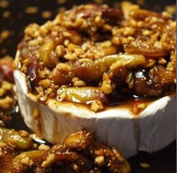

Figs and Toasted Almonds Brie

Ingredients
- ½ cup brown sugar
- 2 tablespoons water
- 6 fresh figs, stemmed and quartered
- 1 (14 ounce) round 4 1/4-inch diameter round Brie cheese
- ½ cup toasted almonds
- ½ teaspoon vanilla extract
steps
- Preheat oven to 325 degrees F (165 C).
-
Heat brown sugar and water in a small saucepan over medium heat until
sugar is completely dissolved. Add figs and vanilla, and cook until
softened, about 10 minutes. Stir in almonds and vanilla. Place brie
wheel in a baking dish, and pour fig mixture over the top.
-
Bake in the preheated oven for 10 to 15 minutes, or until softened but
not melted. Serve with water crackers.
sub-home